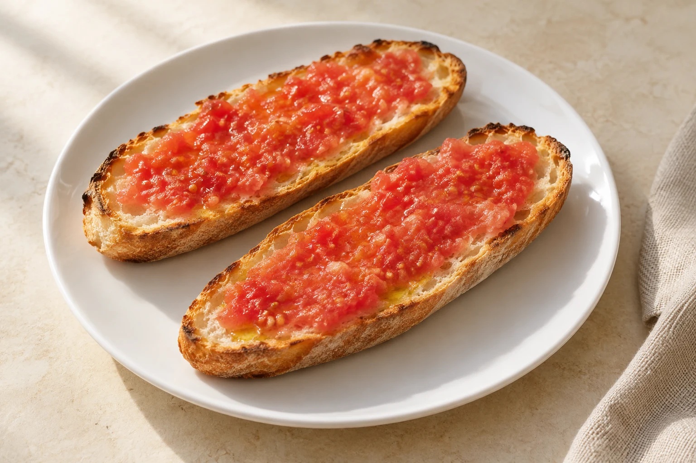

01
Bocadillos y Sandwiches
Añádele lechuga, tomate o cebolla. Ingredientes de la carta: jamón York, queso gouda, atún, jamón serrano, queso manchego, pavo, chorizo, salchichón y paté. Sin suplemento indicado.
Jamón serrano y tomate
Pitufo/Sandwich3.20 €Baguette3.70 €Queso Manchego
Pitufo/Sandwich3.20 €Baguette3.70 €Atún con queso
Pitufo/Sandwich3.20 €Baguette3.70 €Vegetal
Pitufo/Sandwich3.20 €Baguette3.70 €Jamón serrano y queso manchego
Pitufo/Sandwich3.70 €Baguette4.20 €02
Tostadas/Pitufo
Aceite y Tomate
2.20 €Mantequilla y Mermelada
2.20 €